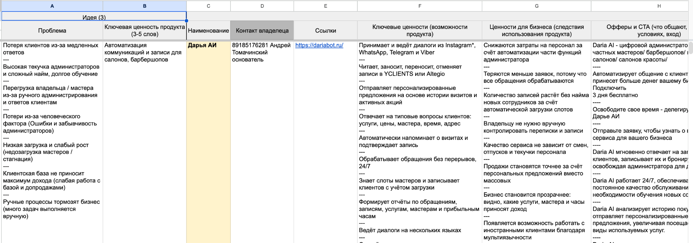
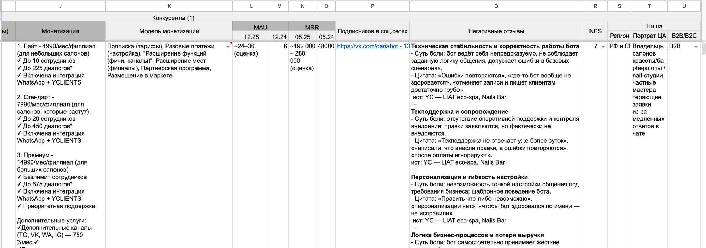
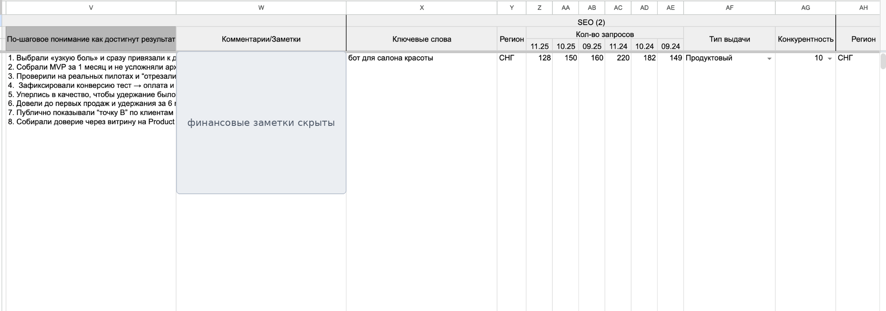
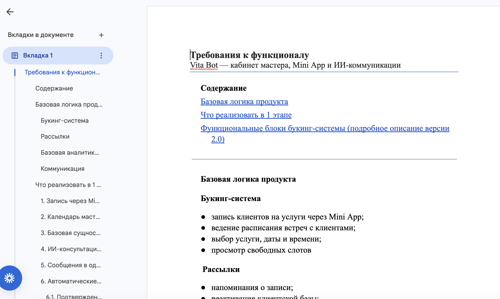
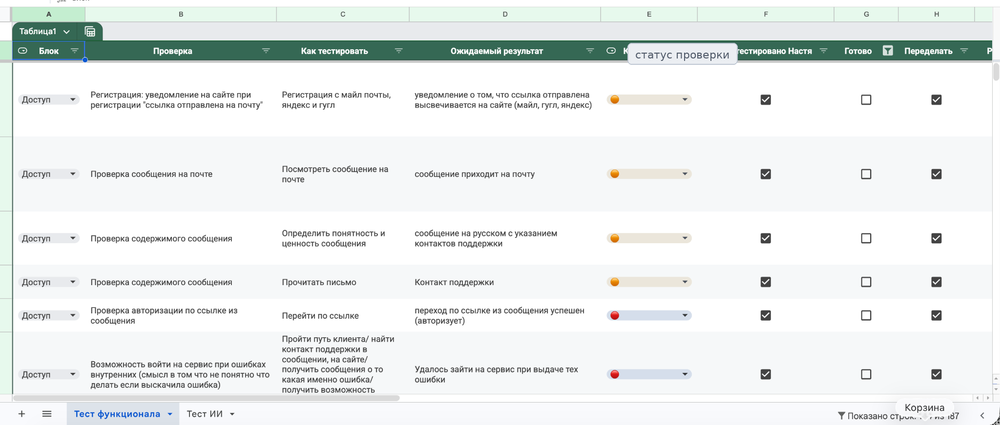
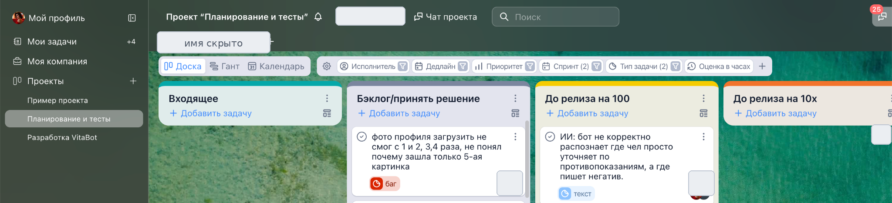
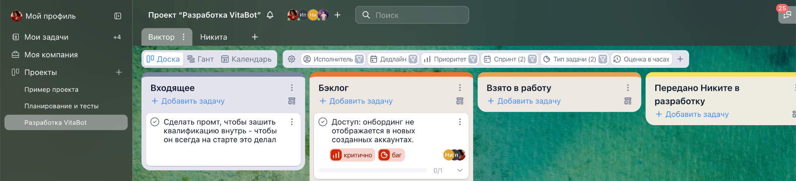
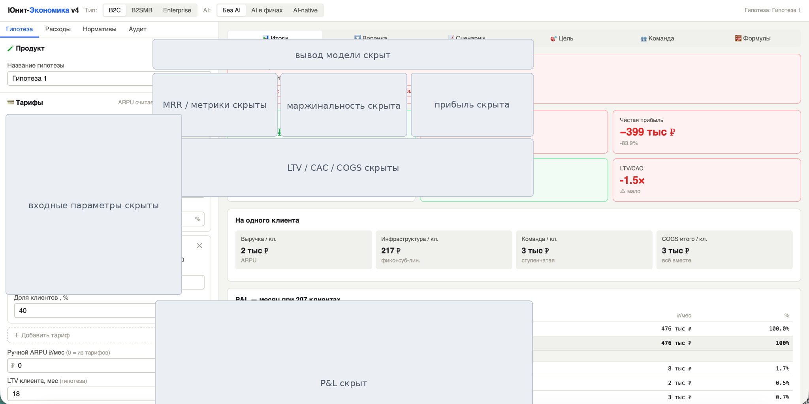
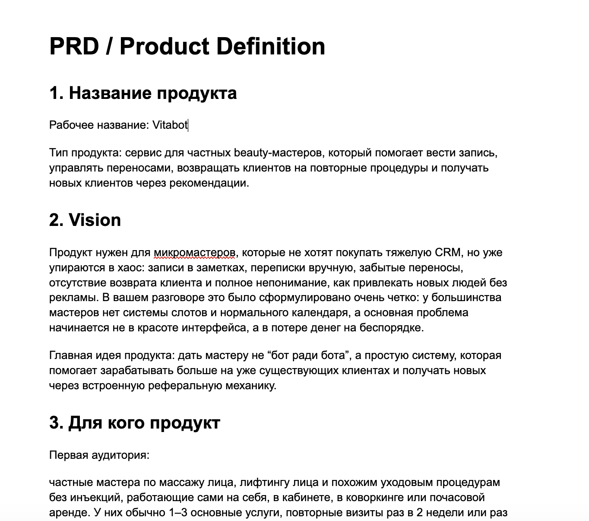

01 / Discovery
Исследовала рынок
Сайты, тарифы, MRR/MAU, офферы, ценность, негативные отзывы, статьи, интервью, тайные покупки и созвоны с основателями.
Исследую рынок и пользователей, формирую PRD/ТЗ, веду backlog, ставлю задачи разработке, принимаю релиз, проверяю гипотезы спроса и считаю unit-экономику.
Главный кейс: продукт для той же аудитории, с которой работают YClients/Altegio — мастера, студии и салоны beauty-индустрии.
VitaBot помогает мастеру вести клиентскую базу, записи, переносы, коммуникации, реактивацию клиентов, рекомендации и допродажи через mini app, CRM-логику и AI-администратора.
Отвечала за продуктовый контур: discovery, конкурентный анализ, PRD/ТЗ, пользовательские сценарии, backlog, постановку задач, приёмку, тестирование, unit-экономику и проверку спроса.
Сайты, тарифы, MRR/MAU, офферы, ценность, негативные отзывы, статьи, интервью, тайные покупки и созвоны с основателями.
Сформулировала vision, целевую аудиторию, сценарии, CRM-логику, AI-администратора, MVP и функциональные требования.
Организовала backlog, спринты, процесс постановки задач, передачу разработчику, проверку, тестирование и вывод в релиз.
Обезличенные скриншоты рабочих артефактов: анализ рынка, PRD, требования, YouGile-процессы, чек-листы тестирования и unit-экономика.









Отдельно проектировала AI-сценарии, чтобы бот не просто отвечал, а помогал мастеру продавать, удерживать клиентов и не терять записи.
Запускала партнёрско-контентную механику: блогер → AI-бот → заявка → квалификация → продажа.
Опыт запуска AI-решений для бизнеса, CRM-процессов, воронок и команды.
Исследование потерь в переписках, приоритизация гипотез, MVP и оценка результата
0→1 продуктовый эксперимент: от личной проблемы и JTBD до работающего MVP и smoke test.
JobFlow помогает соискателю понять, что делать сегодня, не потерять тёплые контакты с работодателями и увидеть, на каком участке воронки возникает просадка — от отклика до оффера.
Product discovery, JTBD, продуктовая архитектура, PRD и backlog, UX-логика, приоритизация, vibe coding, тестирование и запуск smoke test.
Личный продукт для управления фокусом дня, целями, привычками, XP и регулярным прогрессом.
Превратить личное планирование в операционную систему: фокусные задачи, привычки, уровни, баллы и обратная связь по прогрессу.
Сформулировала боль, спроектировала логику целей и XP, собрала MVP с AI-assisted / vibe coding и тестирую на собственных сценариях.
Как прохожу путь от идеи и хаоса до работающего MVP, релиза и бизнес-метрик.